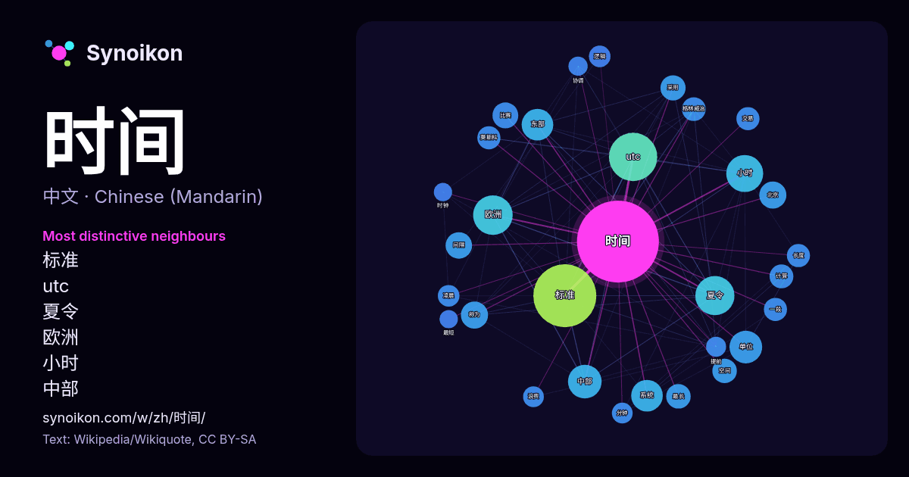

中文 · 每日一词列表
时间
“time” · 来自维基百科, Wikiquote 1308 次出现中其周围的词。

最具特色的邻近词
- 标准 70×
- utc 65×
- 夏令 45×
- 欧洲 29×
- 小时 26×
- 中部 25×
- 东部 25×
- 单位 21×
- 间隔 20×
- 格林威治 18×
- 最长 17×
- 莫斯科 14×
- 长度 14×
- 浪费 13×
- 逻辑 13×
- 空间 13×
- 凌晨 13×
- 交易 12×
- 系统 12×
- 比赛 11×
× = 比维基百科普通文本中多出的倍数。
最常见的邻近词
- 标准 119
- utc 70
- 欧洲 47
- 夏令 46
- 小时 41
- 使用 39
- 中部 34
- 单位 32
- 东部 30
- 系统 30
- 不同 23
- 北京 22
- 称为 22
- 国家 21
- 间隔 21
- 比赛 20
- 時間 19
- 采用 19
- 中国 18
- 最长 18
上下文
- 時間（英語：time）是一种尺度，在物理定义是标量，藉著时间，事件发生之先后可以按过去-现在-未来之序列得以确定（時刻、时间点；instant，point in time），也可以衡量事件持續的期間以及事件之間和间隔长短（时段、时间段；duration，period of time）。 Wikipedia snippets · 时间
- 北京时间（BJT、BT），又名中国标准时间（China Standard Time，CST），是中国大陆的标准时间，比世界協調時快八小時（即UTC+8），与港、澳、台及马来西亚、新加坡等地的標準時間相同。 但要注意的是，北京时间并不是北京市 （东经116°23'）的地方平太阳时间 Wikipedia snippets · 北京时间
- 时间（GMT）的几个替代时间系统之一。对于大多数用途来说，UTC时间被认为能与GMT时间互换，但GMT时间已不再被科学界所确定。 协调世界时（UTC）正式形成于1963年国际无线电咨询委员会的374号建议中，该建议由多国时间实验室共同提出。人们对该时间 Wikipedia snippets · 协调世界时
- Zone），或称美国东部时间（The Eastern Time Zone，ET），主要包括北美东海岸和南美西海岸，覆盖北美经济最发达、人口最密集的区域，它分为两个部分： 东部标准时间（Eastern Standard Time, EST）比协调世界时 (UTC) 晚5小时。 东部夏令时间（Eastern Daylight Wikipedia snippets · 北美东部时区
- … ean Time，縮寫：GMT）又稱格林威治平均時間，是指位於英國倫敦郊區的皇家格林威治天文台當地的平太阳时，因為本初子午線被定義爲通過那裡的經線。 自1924年2月5日開始，格林威治天文台負責每隔一小時向全世界發放調時訊號。 格林尼治标准时间 Wikipedia snippets · 格林尼治標準時間
- 本页按时间长短从小到大列出一些例子，以帮助理解不同时间长度的概念，比较时间单位的数量级。 普朗克时间是光波在真空里传播一个普朗克长度的距离所需的时间。它的数值大约为 5.39×10−44秒。理论而言，它是最小的可测时间间隔。按照当今学术界所了解的物理定律，在这短暂时间间隔里所发生的任何变化无法经测量或探测求得。 Wikipedia snippets · 数量级 (时间)
- 太平洋时区也被称为太平洋时间（英文：Pacific Time，縮寫：PT）。而其標準時間（冬季）称为太平洋标准时间（英文：Pacific Standard Time，縮寫：PST），UTC-8；夏令时间（夏季）称为太平洋夏令时間（英文：Pacific Daylight Time，縮寫：PDT），UTC-7。 Wikipedia snippets · 太平洋时区
- 欧洲中部时间（英語：Central European Time），簡稱CET，是一个时区名称，比世界标准时间（UTC）早一个小时，在大部分欧洲国家和部分北非国家采用。 冬季时间为UTC+1，夏季欧洲夏令时为UTC+2。 下列国家全年使用欧洲中部时间： 阿尔及利亚 安哥拉 贝宁 喀麦隆 中非共和国 乍得 Wikipedia snippets · 欧洲中部时间
更多词
于 2026-10-09 以默认设置预先计算（±5 个词，中等语料）。交互式图可用实时数据刷新。
界面为机器翻译，欢迎指正。